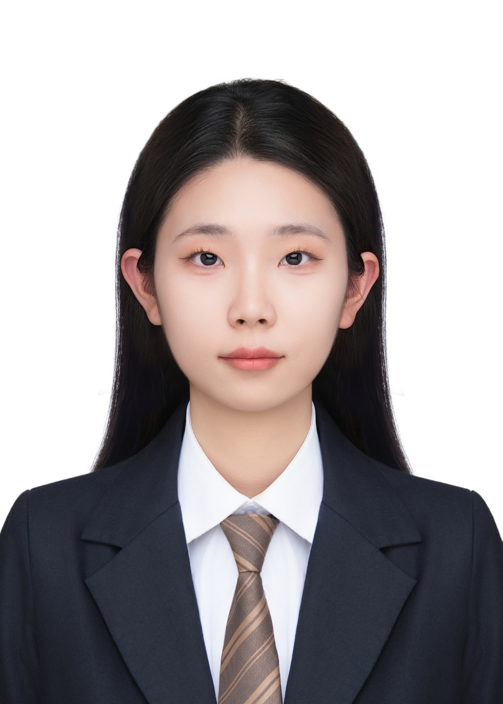
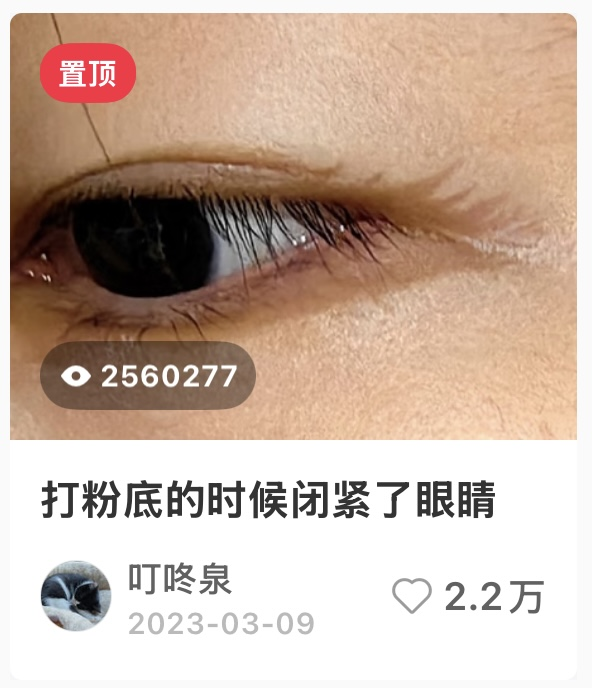
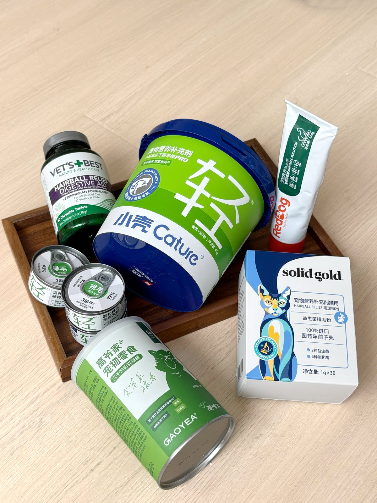
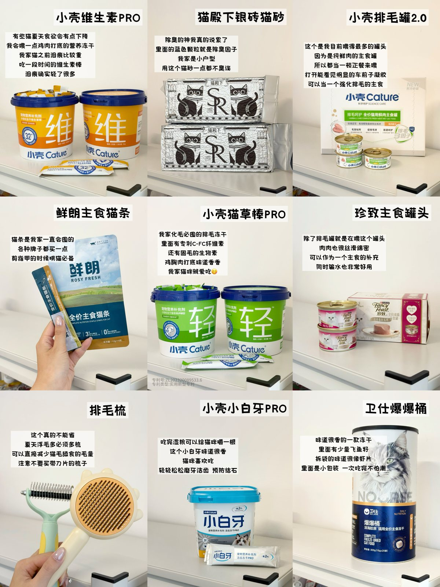
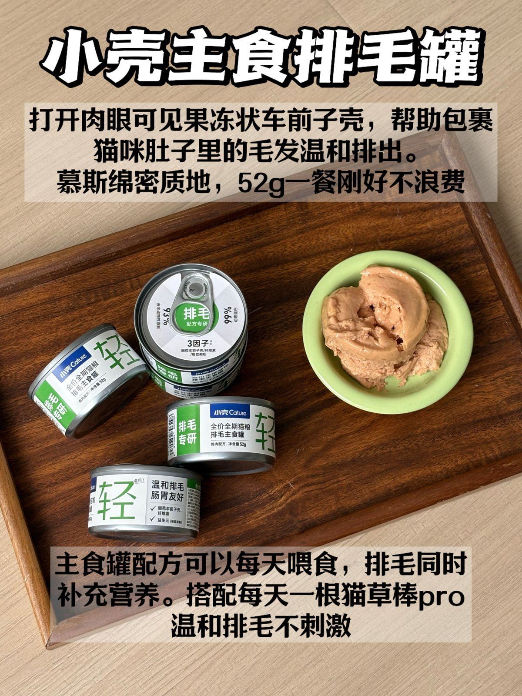
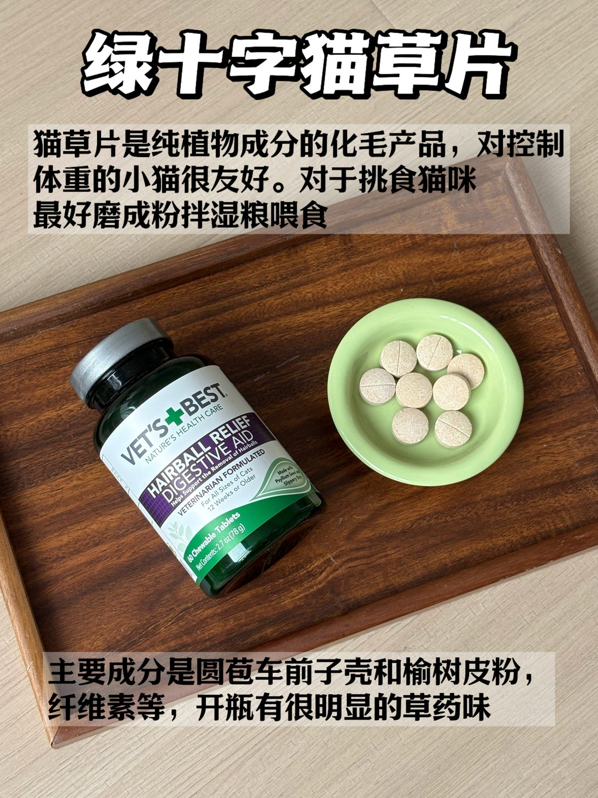
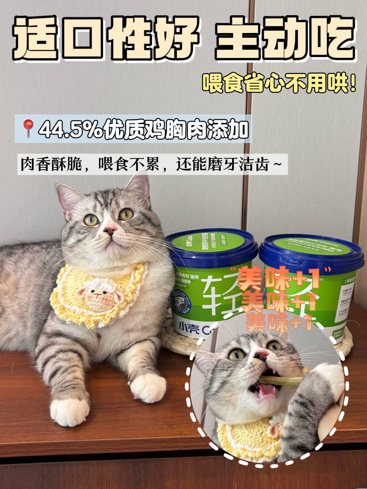
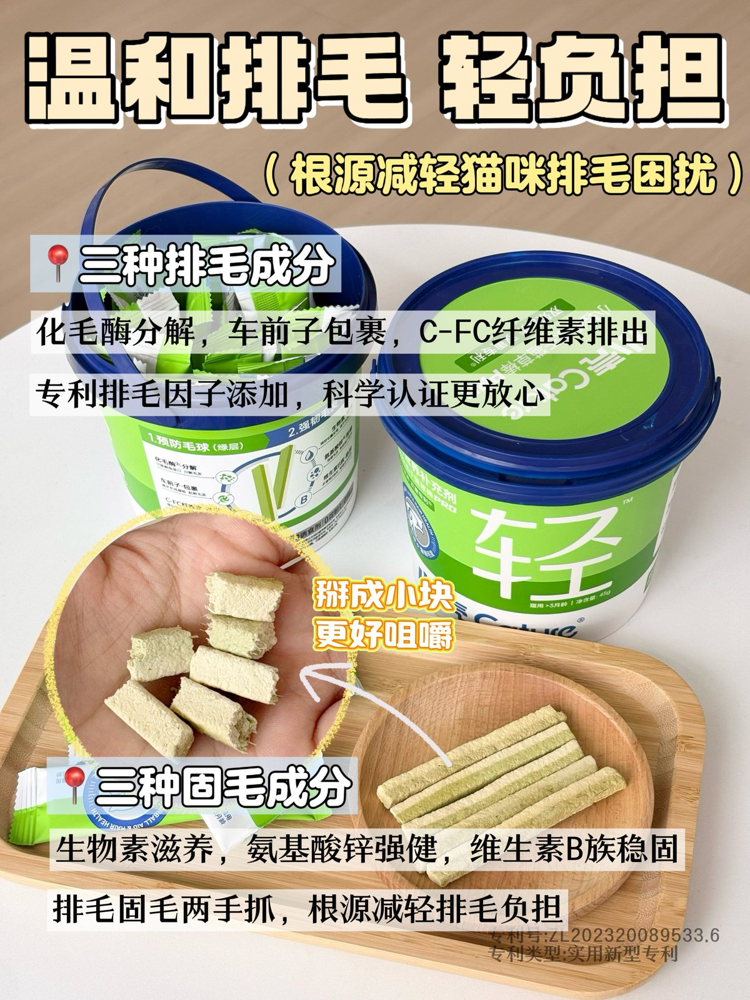
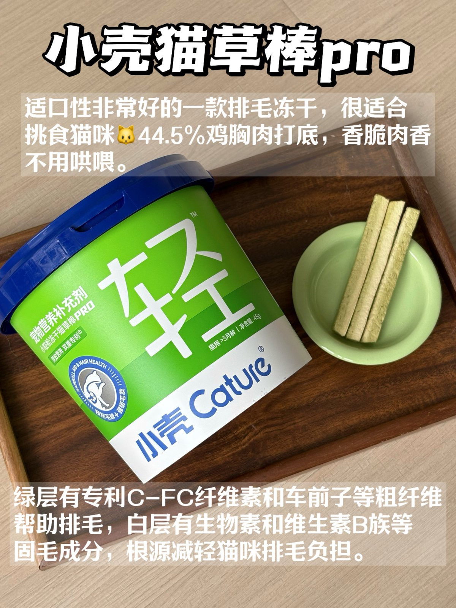

小壳 Cature｜新媒体运营
参与小红书内容矩阵、爆文选题库与素人建联；通过内容优化与 SEO 关键词布局，推动垂类声量提升 40%，站外转化率增长 40%。
嗨，我是
喜欢倾听，也希望能够将更多值得被看见的故事传递出去。

新闻与传播硕士在读。做过新闻采访、个人账号运营和数据新闻，喜欢从真实的人和事里发现值得讲的故事。现在，我想把这些经验用在公益内容中，让更多人了解它，也愿意参与其中。
参与小红书内容矩阵、爆文选题库与素人建联；通过内容优化与 SEO 关键词布局，推动垂类声量提升 40%，站外转化率增长 40%。
使用 Python、Trae、Codex 完成采集、文本分析与可视化；也使用 PS、剪映制作图文视频物料。
完成采访记录、材料筛选、文稿校对与独立成稿，最终见报 17 篇。
在@叮咚泉，我持续创作美妆、个人成长和影视内容。从选题、写作到发布、复盘，写自己感兴趣的事，也琢磨什么角度能让人停下来、愿意留言。目前已有2篇笔记点赞过万，多篇笔记点赞过千。

从笔记视觉到线下物料，我更在意每一张图有没有把内容说清楚，也有没有让人愿意多看一眼。

笔记配图 01
笔记配图 02

笔记配图 03

笔记配图 04

笔记配图 05

笔记配图 06

笔记配图 07

笔记配图 08
视频素材到位后
会在这里自动播放
视频内容与封面待置入
视频内容与封面待置入
视频内容与封面待置入
视频内容与封面待置入
视频内容与封面待置入
这里为你的数据新闻、课程网页与公益创作预留了独立卡册。等你把作品链接放入，我会让每一篇都有自己的封面、简介和跳转入口。
7229 条数据看当代养宠人的爱与怕。
数据新闻 · 待补作品链接媒体文本挖掘课程网页作品。
网页作品 · 待补作品链接图文、视频与互动策划的更多记录。
专题项目 · 待补素材上海理工大学 · 新闻与传播硕士
13979110325@163.com13979110325